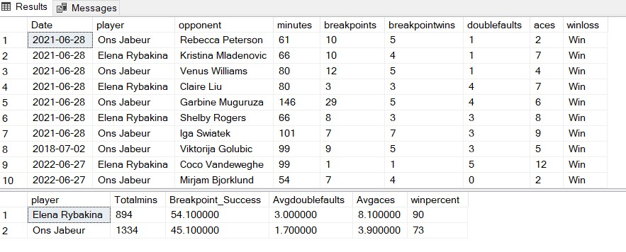
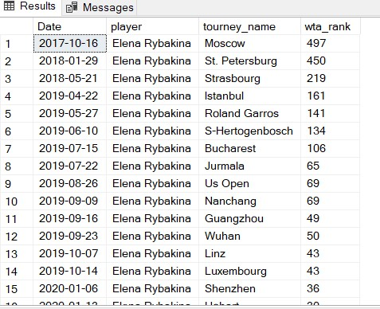
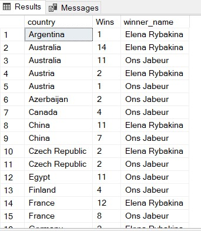

Data Manipulation
In Sql
The ongoing Wimbledon 2022 championships have inspired me to put a newly discovered excitement for data analysis into practice.
The Project
The goal of this project was to produce a Tableau visualisation comparing the success of this years womens finalists, Elena Rybakina and Ons Jabeur, an initial aim of three comparisons was set. These being: the variation of WTA Rank for each player throughout their career, the Wimbledon performance of each player throughout their respective careers and finally the road to this years final for both players. Additionally, a map of locations in which each player had previously won matches would be added to the visualisation and hence the data for this was prepared.
Wimbledon Career Comparison
The first task was to refine the dataset to display only the Wimbledon matches played by Elena Rybakina and Ons Jabeur, this years Ladies singles finalists. The original dataset described tennis matches with a winner_name column and a loser_name column. Therefore it was neccesary to generate a temporary table in which there is a column for the Player (either Jabeur or Rybakina) and the result of the match. Using the CASE function, matches were filtered based upon whether Jabeur and Rybakina were the winner or loser and inserted into a new table. The sum function was used to total the values from each match.
Career rank variation
The second point of focus was to understand how each of the players rankings had varied throughout their careers, therefore the data was refined to select games in which either Rybakina or Jabeur had played and extract the rank of the winner or loser, depending on which they had been in that match.
Next, a simple query to select the run of games for each player in this years competition was carried out.
Success Map
Finally, in order to use the geographical features within Tableau, the locations of each match needed to be assigned, rather than the tennis tournament name. A seperate list was produced assigning country names to the tournaments and competitions that vary in location based upon the year were seperately considered. Using a join, these were attatched to the data set and the data was grouped to total the number of matches won in each location.